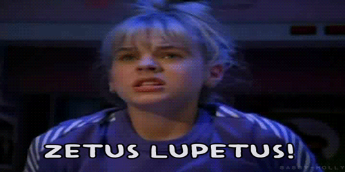
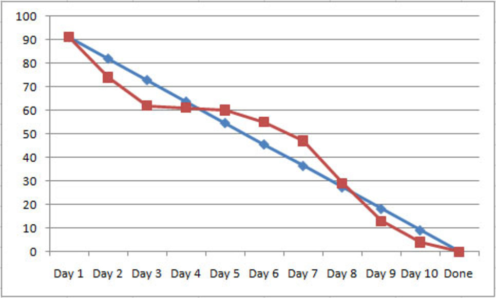
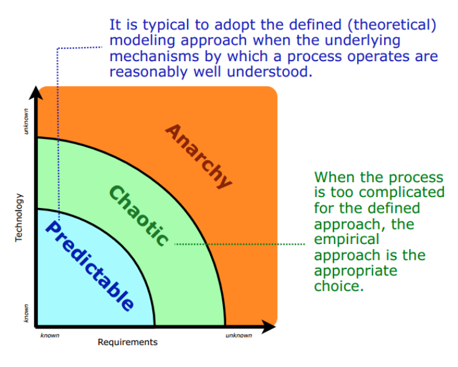
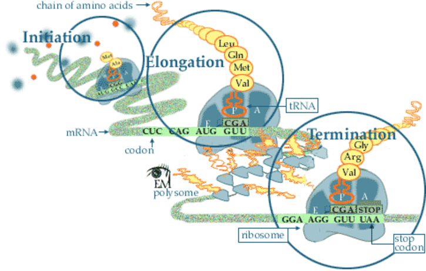

A revised method and means
of educating information
systems administrators
Team 3 - Sprint 2
Progress:
- engage textbook authors
- partner with UWT faculty
- case study help desk systems
- Linux on laptops
- setup new VPS
- migrate content to new server
- IRC channel management
Engage stakeholders:
- authors of TPOSANA (our textbook)
- UW instructor assigned to Spring Quarter
UWT Helpdesk:
between 30 and 40 requests daily
supported users:
- all staff, faculty, students on campus
- approximately 3500 users
supported systems:
- Windows workstations (XP, 7) and Mac OSX
- Microsoft Office
UWT Helpdesk (cont'd):
FootPrints ticketing system
- version 7
- last updated in 2008
- no longer available
- MS SQL database backend
- not directly accessible for us to query
Best Practical
RT: Request Tracker
enterprise-grade issue tracking system
open source license
commercially supported
actively maintained
downloadable at bestpractical.com/rt
RT deployment
Ubuntu 12.04 LTS
RT4 pre-compiled version for Ubuntu
download, install, configure Apache
run locally at http://localhost/rt
Linux Laptops:
- UberStudent on HP Mini
- Arch Linux on HP Pavillion
Setup new VPS

that's https://zetuslapet.us
Server Rebuild
- install Phusion Passenger (Apache module)
- install Redmine
- set up SSL
- redirect port 80 traffic to 443
Migrate content to new VPS
- backup/restore/upgrade Postgres database
- archive/compress/transfer files
- wrestle with SSL
burndown chart?

(it's just not ours)
closer to our reality
so, Scrum's not working?
say it isn't so!
a place for Scrum

an easily predictable system
an example of a complex system

that's more like IT
some future work:
- demo RT4
- explore Configuration Management Systems
- get VOIP server (Mumble) working
- different themes/plugins for Redmine
- script IRC operator bot
- open source ITIL software
questions?
←
→
/
Go to slide:
#